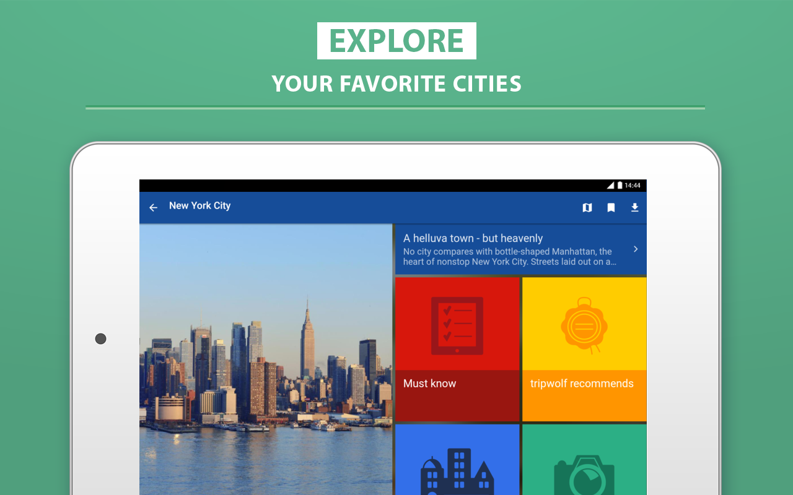

<div class="blurb">	  
    <section class="main-content">
	<h1> Welcome to my Python Project Page! </h1>
	<p><strong> Table of Content </strong></p>
    <a href="#Introduction">Introduction</a>
    <br><a href="#p1">Project I - Food Composition Dataset</a>
    <br><a href="#p2">Project II - US Department of Agriculture Dataset</a>
    <br><a href="#p3">Project III - Web Scraping</a>
    <br><a href="#p4">Project IV - SQLite database & Basemap/Bokeh Charts</a>
    <br><a href="#p5">Final Project - California Travel Guide</a> <br>

    <br>
    
	
	<br>

	<h2><strong><a name="Introduction"><span style="color: green">Introduction</span></a></strong></h2>
	<p> This page contains the projects that I have worked on in STA 141B Class. I was able to gain a better understanding of different libraries in Python, web scraping, the usage of relational database and SQL. <p>

	
	<h2><strong><a name = "p1"> <span style = "color: green"> Project I - Food Composition Dataset </span></a></strong></h2>
	

	<p> Analyzed the USDA Food Composition Databases and visualizing the data using scatter plots, boxplots and heatmap. <a href = "../Projects/USDA_Food_Database.html"> Click here to see the project <a> <p>

	<h2><strong><a name = "p2"> <span style = "color: green"> Project II - US Department of Agriculture Dataset </span></a></strong></h2>
	

	<p> Analyzed the US Department of Agriculture dataset and conduct analysis using histograms, scatter plots and boxplots. <a href = "../Projects/US_Agriculture_Analysis.html"> Click here to see the project <a> <p>

	<h2><strong><a name = "p3"> <span style = "color: green"> Project III - Web Scraping</span></a></strong></h2>
	

	<p> Conducted web scraping on the articles from <a href = "https://theaggie.org/"> The California Aggie Website<a> and used natural language processing to analyze the text. <a href = "../Projects/Aggie.html"> Click here to see the project <a> <p>

	<h2><strong><a name = "p4"> <span style = "color: green"> Project IV - SQLite database & Basemap/Bokeh Charts </span></a></strong></h2>

	

	<p> Analyzed the SQLite database sf_data.sqlite and used bokeh charts and basemaps to analyze the data. <a href = "../Projects/SF_Analysis.html"> Click here to see the project <a> <p>

	<h2><strong><a name = "p5"> <span style = "color: green"> Final Project - California Travel Guide</span></a></strong></h2>
	

	<p> Created a travel guide for California visitors by showing them the best hotels, restaurants, and landmarks with the applications of web data processing, interactive data vistualization, natural language processing, and interactive user input using Python. <a href = "../Projects/final_project.html"> Click here to see the project <a> <p>

	<p> <a href = "../index.html"> <a> <p> 

      </section>
</div>
